第01讲 深度学习概述
一、课程简介
欢迎来到《动手学深度学习》的第一讲！在正式接触神经网络之前，我们先弄清楚三件事：这门课怎么上、怎么考、需要什么基础。
1.1 课程基本信息
| 项目 | 内容 |
|---|---|
| 课程名称 | 动手学深度学习 |
| 课程安排 | 16 学时理论 + 16 学时实践（共 32 学时） |
| 教材 | 《动手学深度学习》，在线阅读：zh.d2l.ai |
| 考核方式 | 10% 出勤 40% 实验与课堂表现 50% 课程综合设计 |
| 学习基础 | Python、线性代数等；最好学过机器学习（没学过也能跟上，但需要课后补一补） |
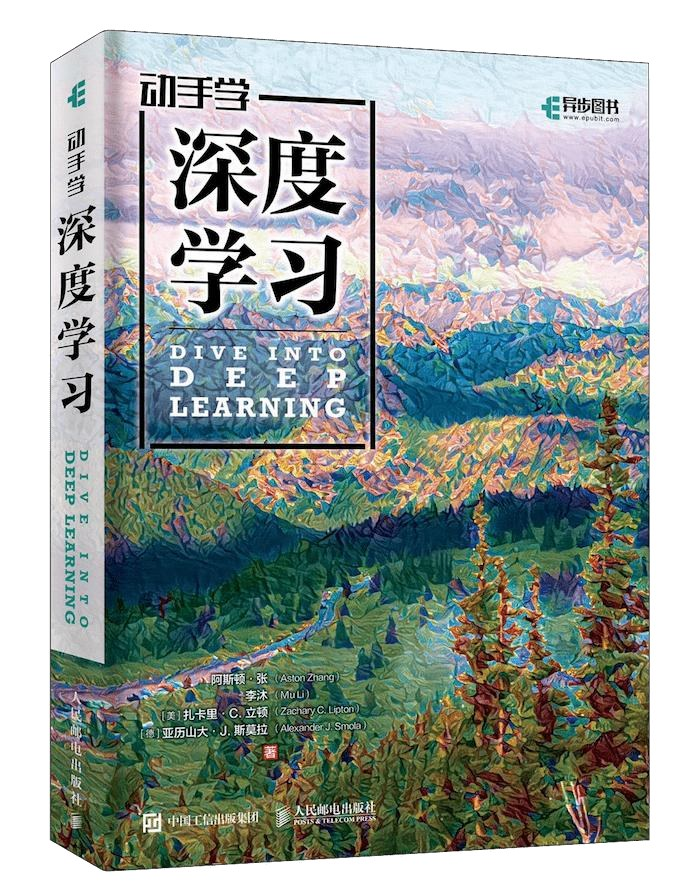
1.2 全学期课程地图
| 章次 | 内容 | 学时分配 |
|---|---|---|
| 01 | 深度学习概述（本讲） | 理论 1 学时 + 实验 1 学时 |
| 02 | 深度学习基础 | 理论 2 学时 |
| 03 | 深度神经网络 | 理论 6 学时 + 实验 4 学时 |
| 04 | 卷积神经网络 | 理论 2 学时 + 实验 2 学时 |
| 05 | 循环和递归神经网络 | 理论 2 学时 + 实验 2 学时 |
| 06 | 深度学习在计算机视觉的应用 | 理论 1 学时 + 实验 3 学时 |
| 07 | 深度学习在自然语言处理中的应用 | 理论 1 学时 + 实验 3 学时 |
| 08 | 注意力机制、Transformer、大语言模型 | 理论 1 学时 + 实验 1 学时 |
地图解读：第 03 章"深度神经网络"学时最多（共 10 学时），是全课程的核心与难点；第 04、05 章分别对应图像和文本两大类主流模型；最后三章是前沿应用，最终落到大语言模型（LLM）上。本讲是整个旅程的起点。
1.3 课外学习资料
全球最经典的深度学习入门网课，讲解细致、循序渐进，适合作为本课程的同步视频补充。
中文讲解、风趣易懂，被无数初学者奉为"最好的中文深度学习课"，线性代数部分还能顺便补数学基础。
Ian Goodfellow 等著，深度学习领域的权威理论教材，因封面是一束花而被称作"花书"。理论较深，适合进阶阅读。本讲后面的多张插图就出自这本书。
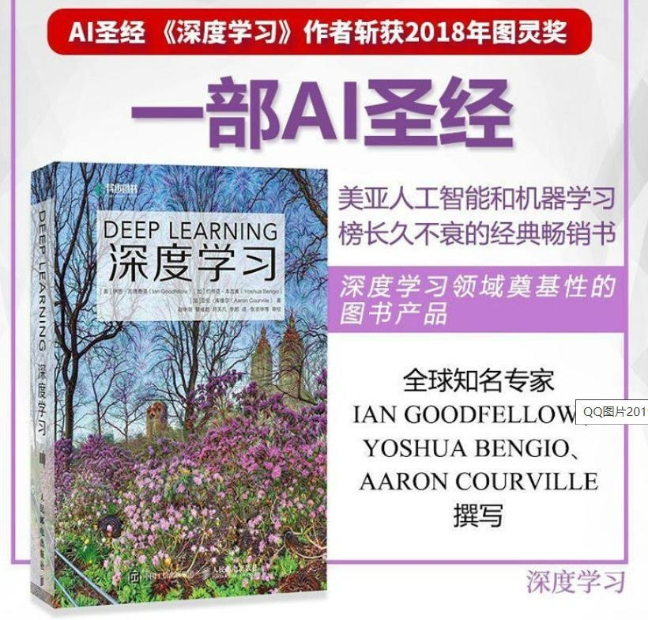
二、什么是深度学习
2.1 从房价预测说起：一个神经元能做什么
我们从一个最朴素的任务开始：根据房子的信息预测它的价格。这是机器学习中最经典的"回归"问题。
第一步：只看一个因素。先只考虑面积——输入面积 \(x\)，输出价格 \(y\)。在坐标系中，数据点大致呈"面积越大、价格越高"的趋势。用一个神经元来拟合这种关系：
其中 \(w\) 是权重、\(b\) 是偏差、\(\sigma\) 是激活函数。训练的过程，就是不断调整 \(w\) 和 \(b\)，让这条曲线尽量贴近真实数据。
第二步：考虑更多因素。现实中房价不只由面积决定。把更多特征加进来，一个神经元就不够用了，需要多个神经元协同工作——这就是"神经网络"：
| 输入特征 | 符号 | 说明 |
|---|---|---|
| 面积 | \(x_1\) | 房屋建筑面积 |
| 朝向 | \(x_2\) | 南北通透还是东西向 |
| 房间数 | \(x_3\) | 几室几厅 |
| 配套 | \(x_4\) | 周边学校、地铁、商场等 |
| 输出：价格 | \(y\) | 网络的预测结果 |
2.2 神经网络的三层结构
一个标准的多层神经网络由三部分组成：
- 输入层（Input layer）：接收原始特征（面积、朝向、房间数、配套）。它本身不做计算，只是"把数据送进来"；
- 隐含层（Hidden layer）：位于输入和输出之间，是计算真正发生的地方。外界看不到它的中间输出，所以叫"隐含"；
- 输出层（Output layer）：给出最终预测结果（房价）。
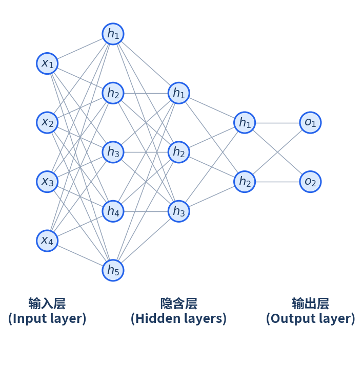
2.3 "深度"到底指什么？
2.4 深度学习在人工智能中的位置
"人工智能""机器学习""深度学习"这些词经常被混用，其实它们是一层套一层的包含关系。下面这组同心圆出自"花书"《Deep Learning》：
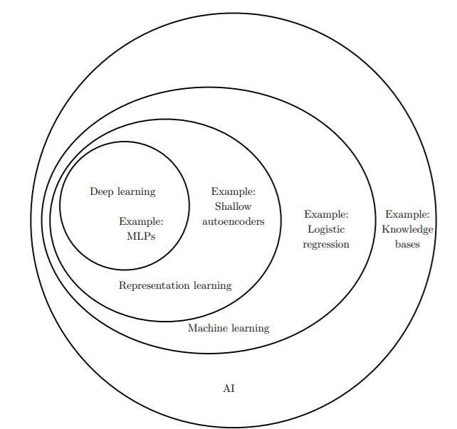
2.5 深度学习 vs 传统机器学习：特征从哪来？
这是理解深度学习最关键的一张图（花书 Figure 1.5，"Learning Multiple Components"），它对比了四种方法从输入到输出的流程：
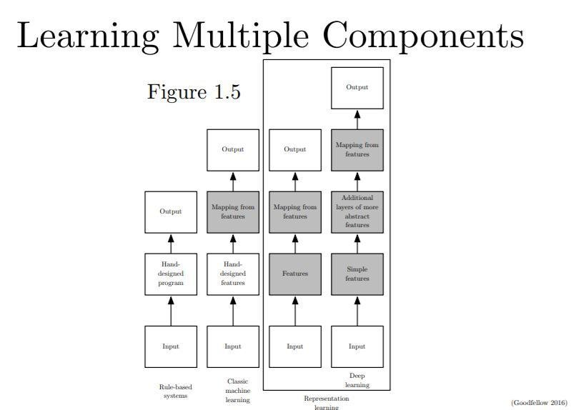
| 方法 | 流程 | 特征由谁提供？ |
|---|---|---|
| 基于规则的系统 | 输入 → 手工设计的程序 → 输出 | 人（规则全是人写的） |
| 经典机器学习 | 输入 → 手工设计的特征 → 从特征映射 → 输出 | 人设计特征，机器只学映射 |
| 表示学习 | 输入 → 自动学习的特征 → 从特征映射 → 输出 | 机器自己学特征 |
| 深度学习 | 输入 → 简单特征 → 更抽象的特征（多层）→ 映射 → 输出 | 机器分层学习由简单到抽象的特征 |
举个识别人脸的例子：传统方法需要人告诉机器"先看边缘、再看五官比例"；而深度学习自己逐层总结——底层学边缘和色块 → 中层学眼睛、鼻子 → 高层学整张脸的轮廓。特征不再靠人教，而是机器从数据中自动学出来的。
2.6 从生物神经元到人工神经元
"神经网络"这个名字来自对大脑的模仿。先看一看真实的生物神经元长什么样：
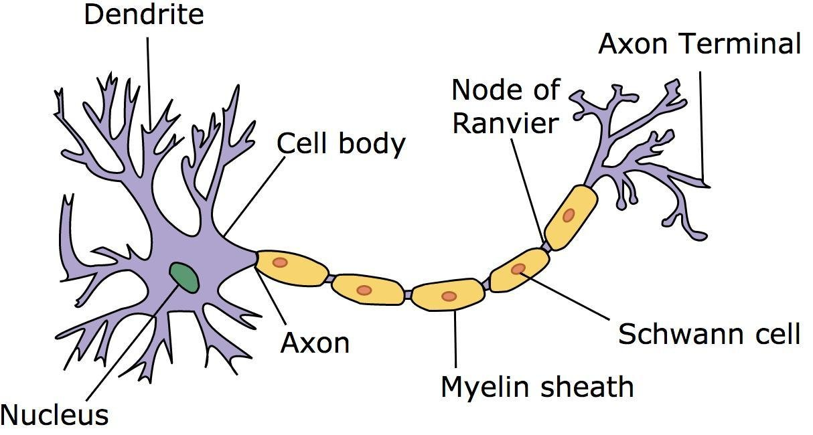
人工神经元正是对这一过程的简化模仿，三者一一对应：
| 生物神经元 | 人工神经元 |
|---|---|
| 树突接收来自其他神经元的信号 | 输入：来自上一个神经元的数值 |
| 细胞体整合信号，足够强才"发放" | 计算在此发生：加权求和 + 激活函数 |
| 轴突把信号传给下一个神经元 | 输出：发到下一个神经元 |
三、深度学习发展简史
深度学习并非一夜成名。从 20 世纪 40 年代至今，神经网络研究经历了三次浪潮。下面这张词频统计图出自"花书"：它统计了 "cybernetics（控制论）" 与 "connectionism + neural networks（联结主义/神经网络）" 两组术语在出版物中的出现频率，曲线的三次起伏正好对应三次浪潮。
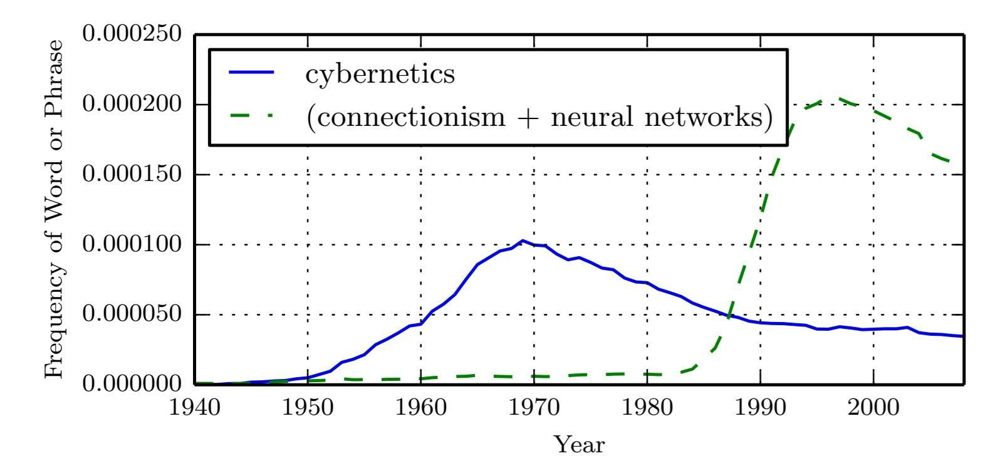
3.1 第一次浪潮（20 世纪 40—60 年代）：控制论时期
第一个可以"学习"的神经网络模型，能够完成简单的分类任务，曾在全世界引起轰动——人们第一次看到了"机器自己学会做事"的可能。
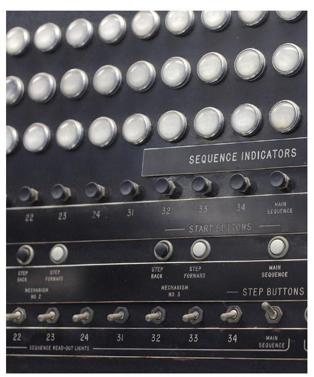
Adaline（adaptive linear element，自适应线性元件，单个神经元）及其多层组合 Madaline，把感知机的思想向前推进了一步。
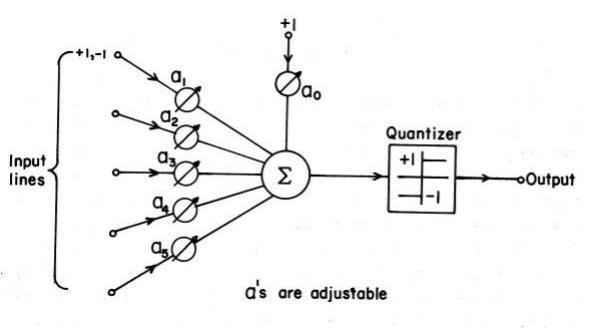
3.2 第二次浪潮（20 世纪 80—90 年代）：联结主义时期
1986 年 Rumelhart 等人、1987 年 LeCun 等人推广使用了反向传播算法（back-propagation，简称 BP），让神经网络迎来第二春。
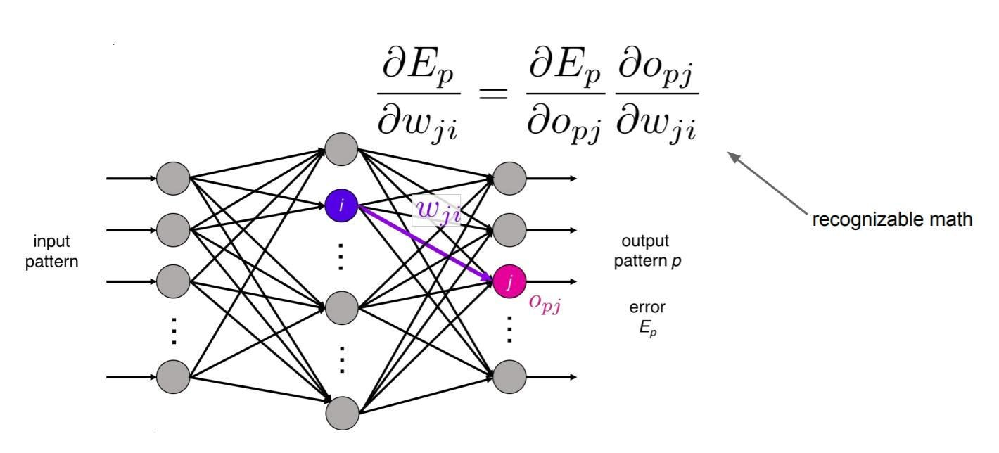
3.3 第三次浪潮（2006 年至今）：深度学习时期
提出名为"深度信念网络（Deep Belief Network）"的神经网络，可以使用一种称为"贪婪逐层预训练"的策略来有效训练——即先把每一层单独训练好，再整体微调。这一突破引发神经网络研究的第三次浪潮。
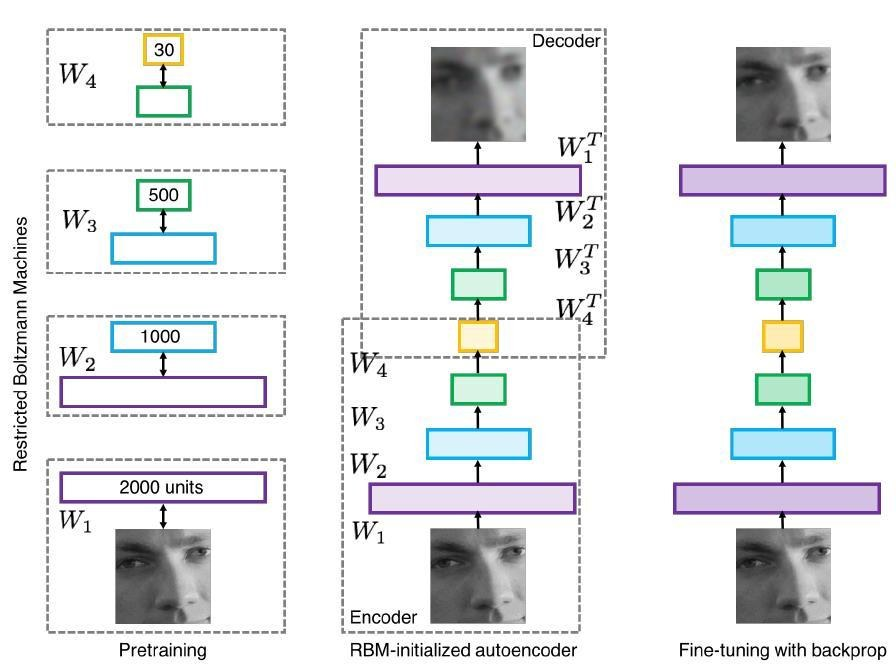
此次浪潮普及了"深度学习"这一术语——从此"神经网络"换上了"深度学习"的新名字，一直火热至今。Hinton 也因此被誉为"深度学习之父"，并于 2018 年获得图灵奖。
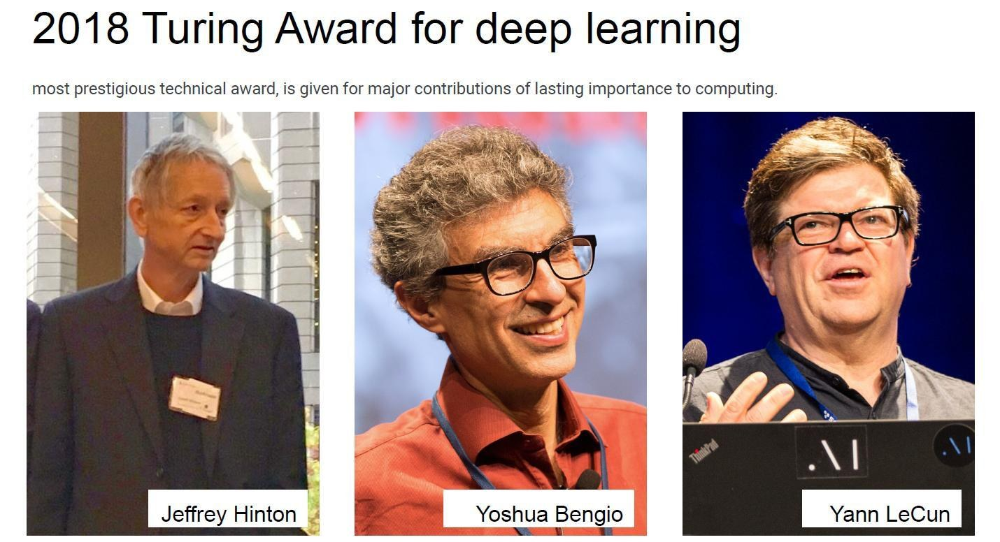
四、深度学习为什么现在火热？
一个自然的疑问是：神经网络的基本思想几十年前就有了，为什么直到最近十年才突然爆发？吴恩达（Andrew Ng）对此给出过经典解释，原因有两个：
互联网时代积累了前所未有的标注数据——图片、文字、语音、视频……模型越大，需要"喂"的数据越多。数据是深度学习的"燃料"，而这桶燃料在 2010 年代才真正加满。
GPU（图形处理器）等并行计算硬件，让训练超大规模网络从"几个月都跑不完"变成"几天就能完成"。硬件是深度学习的"引擎"，没有它，再好的算法也只能停留在论文里。
4.1 规模驱动深度学习进步
吴恩达有一张著名的手绘图，解释了"为什么大数据 + 大模型这个时代属于深度学习"：
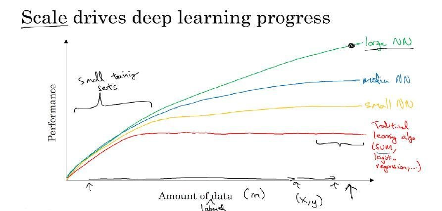
五、深度学习典型应用
深度学习到底"能做什么"？本节用大量实例给出答案。以下按领域整理，每个应用都附了出处，学有余力的同学可以顺藤摸瓜。这些应用现在不要求懂原理，目的是建立整体印象——第 04~08 章会逐步带你走近它们。
5.1 计算机视觉（Computer Vision）
| 应用 | 说明 | 出处 |
|---|---|---|
| 图像分类 | 判断整张图片是什么（猫？狗？汽车？）。背后是著名的 ImageNet 大规模图像数据库与竞赛，它被称为"改变了 AI 研究方向的数据" | image-net.org；Yanofsky, Quartz |
| 目标检测和分割 | 不仅知道图里"有什么"，还要框出"在哪里"（检测），并精确到像素地勾勒每个物体的轮廓（分割）。代表工作：Mask R-CNN | matterport/Mask_RCNN |
| 图片风格变换 | 把一张照片"画成"梵高、莫奈的风格——保留内容、替换艺术风格（风格迁移） | MXNet-Gluon-Style-Transfer |
| 人脸合成 | 凭空生成以假乱真、现实中并不存在的人脸照片 | Karras et al., ICLR 2018 |
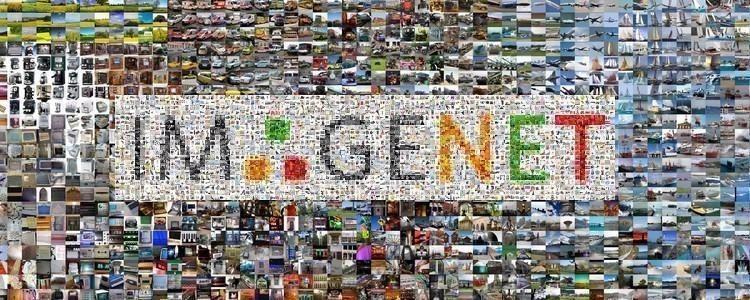
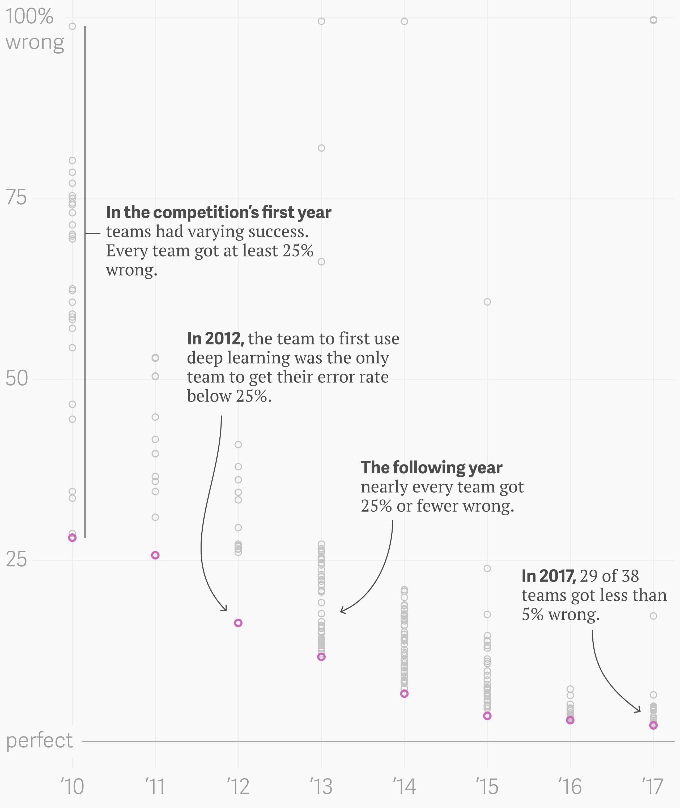
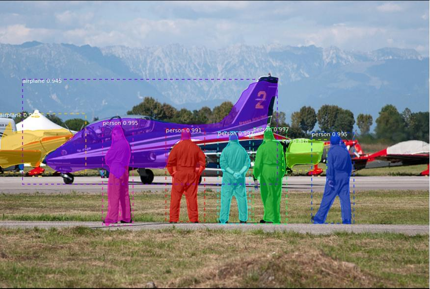
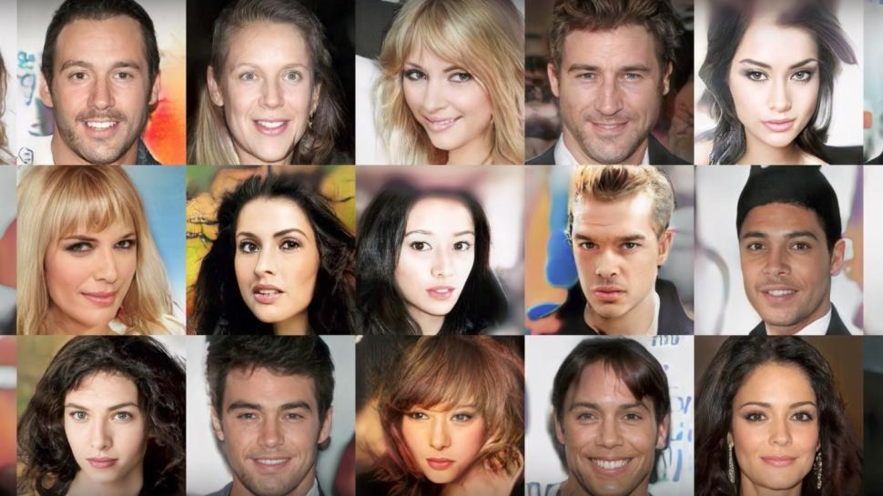
5.2 自然语言处理（NLP）
| 应用 | 说明 | 出处 |
|---|---|---|
| 自然语言向量类比 | 把词语表示成向量后，可以做语义运算（word2vec） | TensorFlow word2vec 教程 |
| 机器翻译 | 用神经网络自动翻译（如谷歌神经机器翻译），质量远超传统方法 | PCMag 相关报道 |
| 自然语言文本合成 | 自动生成通顺的文章、摘要甚至诗歌 | Li et al., NAACL 2018 |
| 自然语言自动问答 | 给定图片或一段文字，自动回答相关问题 | Shi et al., 2018, Arxiv |
词向量类比有多神奇？把词语映射成向量之后，词语之间的语义关系就变成了向量之间的算术关系：
也就是说，"国王"减去"男人"再加上"女人"，得到的向量最接近的词竟然是"女王"——模型自己领悟了"性别"这个抽象概念。
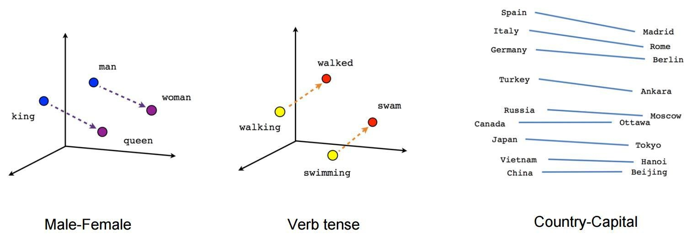
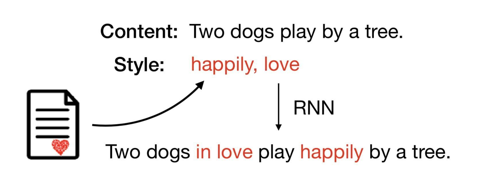
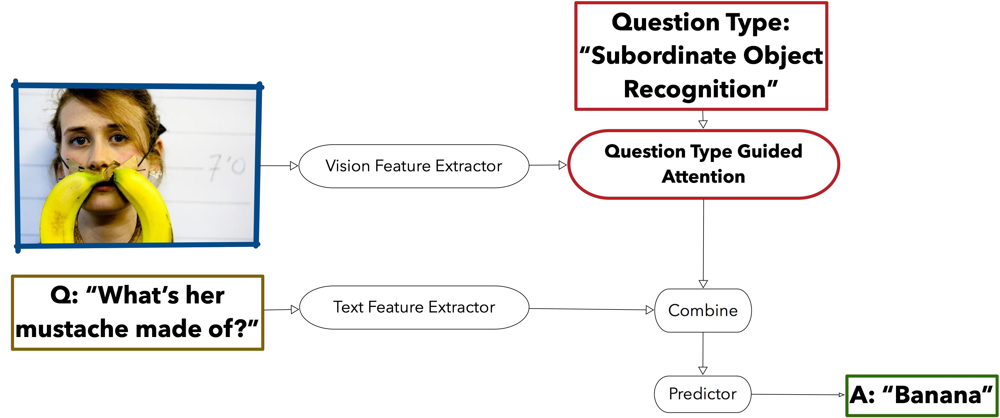
5.3 视觉 + 语言的交叉应用
输入一张图片，自动输出一句描述它的话（如"一个小孩在草地上踢球"）。这需要模型同时"看懂图"（计算机视觉）和"说人话"（自然语言生成），是两大领域交叉的典型代表。出处：Shallue et al., 2016，谷歌 Show and Tell。
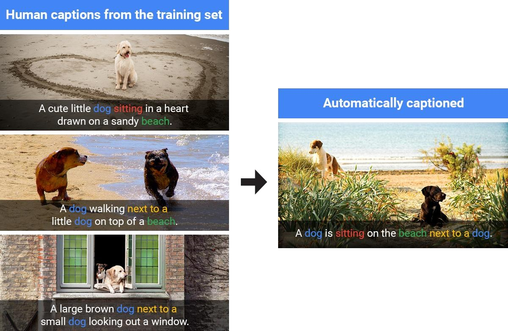
六、深度学习主流框架
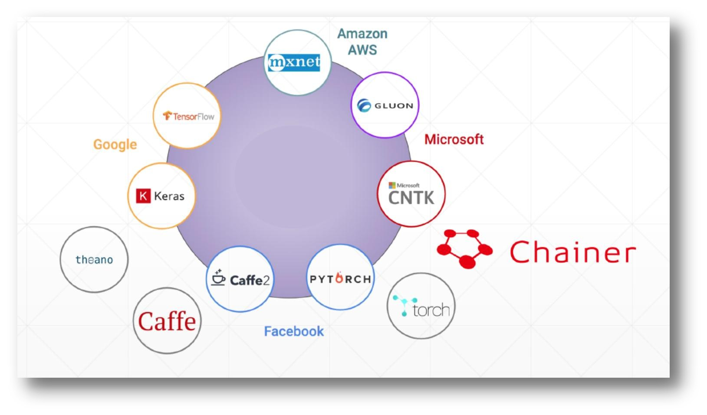
6.1 五大框架速览
| 框架 | 特点 | 优点 | 缺点 |
|---|---|---|---|
| Caffe | 用 Protobuf 配置文件作为界面，网络结构写在 .prototxt 里（如 ResNet-101-deploy.prototxt） | 强大的视觉模型覆盖率；灵活可移植 | 不易开发（改网络结构很麻烦） |
| TensorFlow | Python 的域特定语言（DSL），Google 开发，示例：实现 Adam 优化算法 | 算子丰富、功能全面（训练/部署/可视化生态完整） | 代码可读性有限（尤其 1.x 版本） |
| Keras | 简单的 Python DSL，可使用多个后端（TensorFlow、MXNet、CNTK……），相当于"统一高层接口" | 比 TensorFlow 简易，上手快 | 相对更慢；封装太深，不易开发和调试 |
| PyTorch | Torch tensors + Chainer 风格的神经网络，动态计算图，写起来像普通 Python | 易开发和调试（学术界最爱） | 不易配置部署 |
| MXNet | 像 Numpy 一样的 Tensor + 像 Keras 一样的神经网络，示例：实现 ResNet、Adam | 高性能、高实用性 | 社区生态相对较小 |
补充：本课程教材《动手学深度学习》早期版本正是基于 MXNet 的 Gluon 接口编写的。
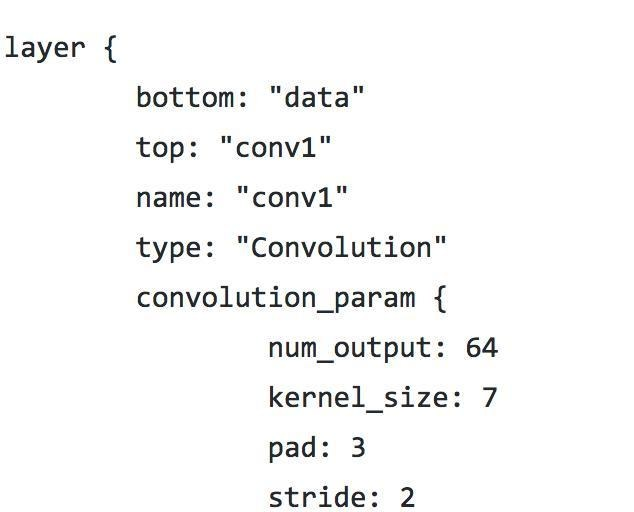
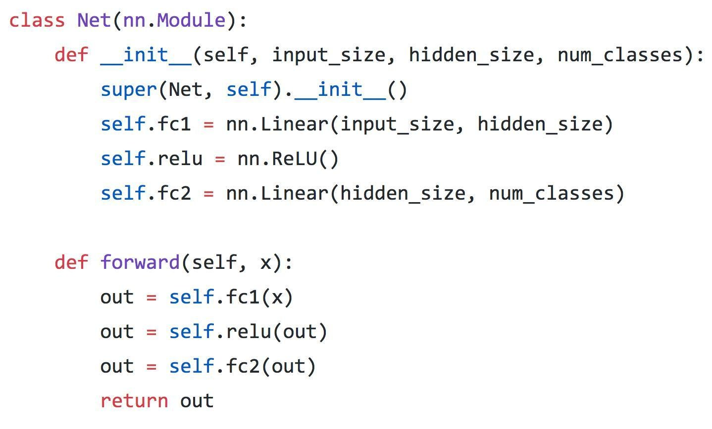
6.2 框架流行度
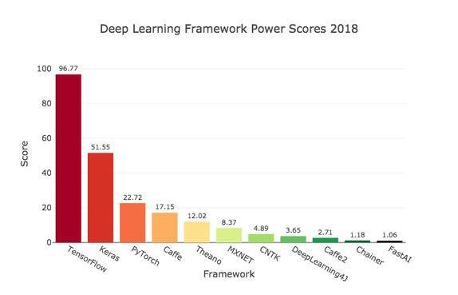
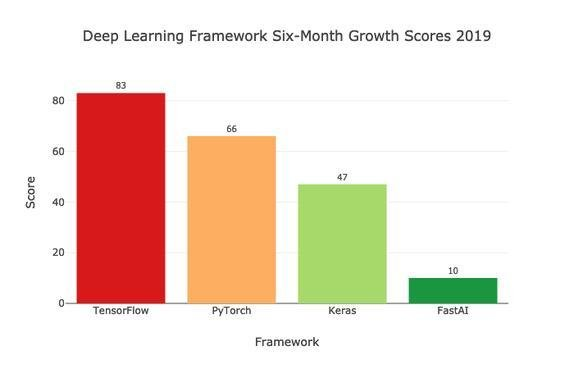
6.3 PyTorch vs TensorFlow
| 维度 | PyTorch | TensorFlow 1 | TensorFlow 2 |
|---|---|---|---|
| 性能 | √√√√ | √√√√ | √√√√ |
| 生态 | √√√√ | √√√√√√ | √√ |
| 工业界 | √√√ | √√√√√ | √√ |
| 学术界 | √√√√√ | √√√ | √√ |
| 上手难度 | √√√√√ | √√ | √√√√ |
| 易用性 | √√√√√ | √ | √√√√ |
| 兼容性 | √√√√ | √ | √ |
| 发展前景 | √√√√ | 0 | √√√√ |
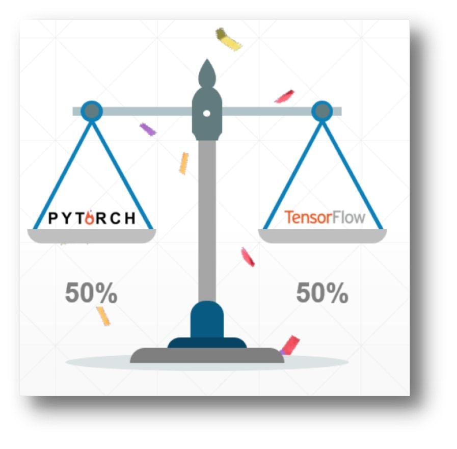
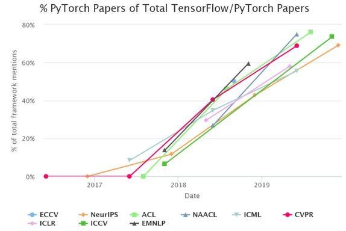
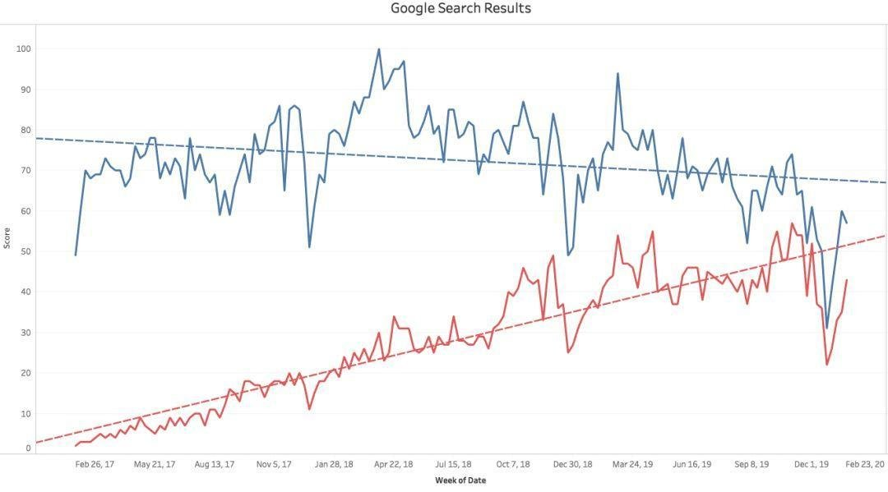
6.4 补充概念：动态图 vs 静态图
| 静态图（TensorFlow 1.x） | 动态图（PyTorch） | |
|---|---|---|
| 工作方式 | 先"画好"整张计算图，再一次性运行 | 边写边算，代码执行到哪、图就建到哪 |
| 优点 | 运行效率高，便于部署优化 | 像普通 Python 一样自然，可随时 print、打断点调试 |
| 缺点 | 写法不直观，调试困难 | 部署时需要额外转换 |
七、实验环境配置
7.1 两种配置方案
| 方案一：纯手工搭配 | 方案二：Anaconda（我们的选择） | |
|---|---|---|
| 包含内容 | Python + PyCharm + Jupyter Notebook + Numpy + pandas + scikit-learn + ……（每个软件单独下载安装） | Anaconda 一步到位：Python 本体 + Numpy / pandas / scikit-learn 等科学计算库 + Spyder / Jupyter Notebook，再单独装一个 PyCharm 作为主力 IDE |
| 优劣 | 灵活但繁琐，新手容易在版本冲突上踩坑 | 省心省力，包管理工具 conda 一键解决依赖问题 |
7.2 各软件安装指南
| 软件 | 安装方式 |
|---|---|
| Python | 官网下载：Windows 版 / Mac 版 |
| Jupyter Notebook | 命令行执行 pip install notebook（安装 Anaconda 的同学已自带，无需单独安装） |
| PyCharm | 官网下载，安装免费社区版（Community）即可；PyCharm 学习手册 |
| Anaconda | 官网；国内镜像（下载快很多）：清华大学开源镜像站（建议选择 Python 3.x 对应的较新版本） |
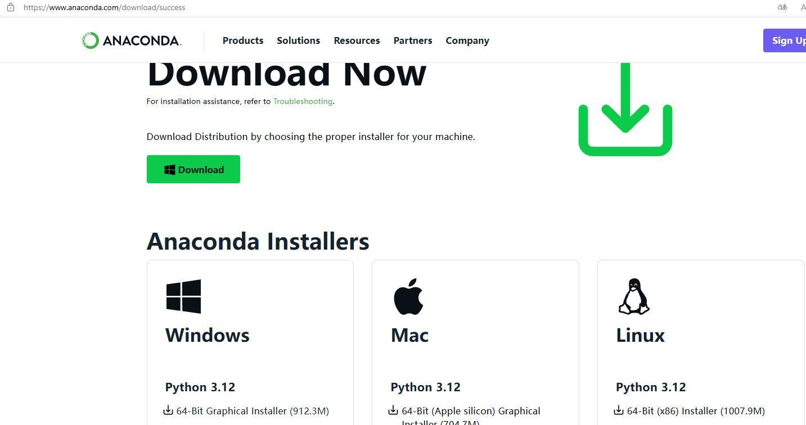
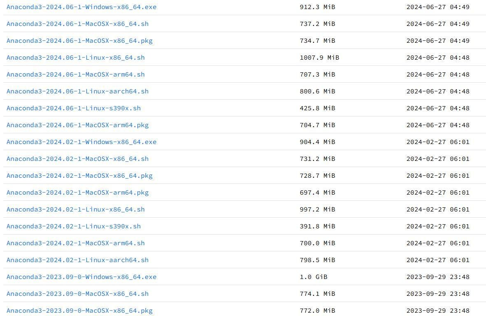
conda 命令。
7.3 使用 PyCharm 创建工程
-
1
打开 PyCharm，选择 New Project（新建项目）。
-
2
选择项目存放路径——路径中尽量避免中文和空格，可减少莫名其妙的报错。
-
3
关键一步：在 Python Interpreter（解释器）选项中，选择 Anaconda 自带的 Python（通常形如
...\Anaconda3\python.exe），这样项目才能直接使用 numpy、pandas 等已安装的科学计算库。 -
4
点击 Create 创建工程，在工程中新建
.py文件，就可以开始写代码了。
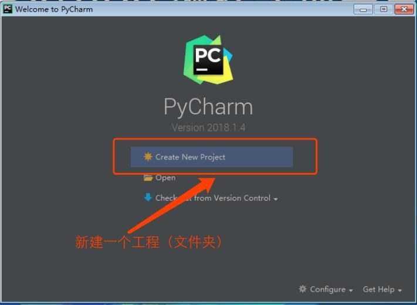
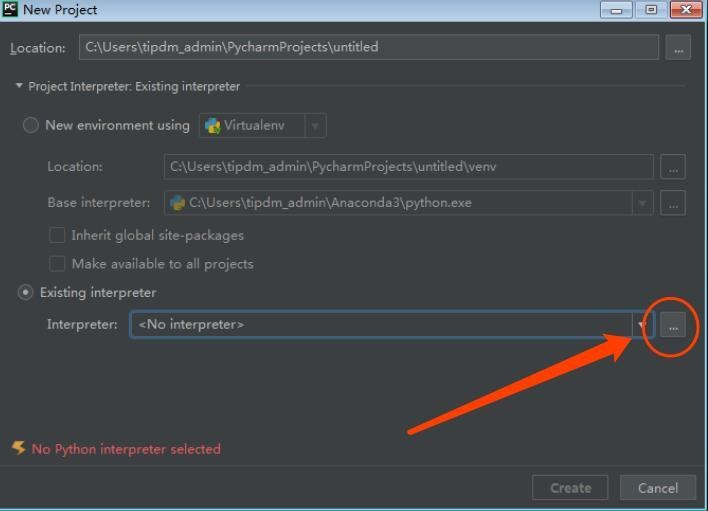
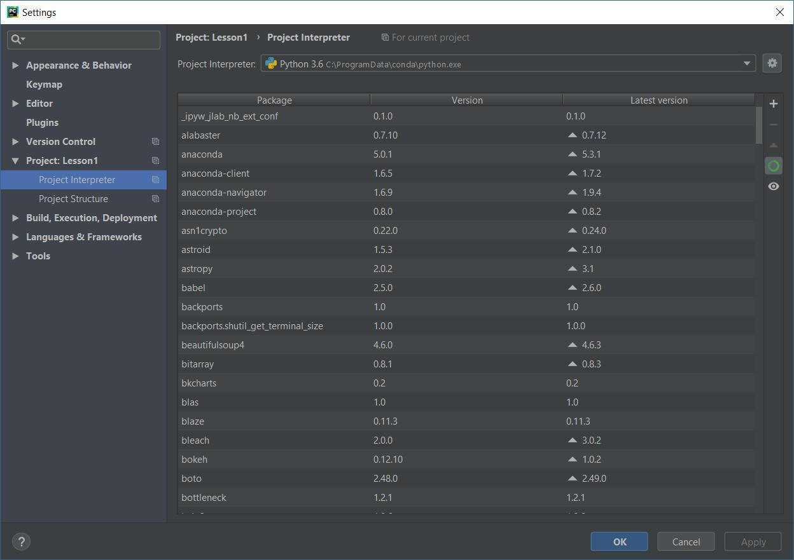
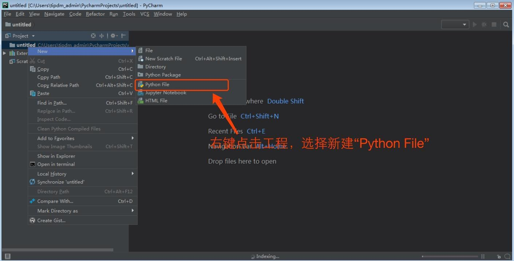
八、动手实操：安装 PyTorch 并验证环境
以下命令全部在 Anaconda Prompt（Windows 开始菜单中搜索）中执行。
8.1 配置国内镜像源（让下载飞起来）
注：镜像频道列表可能随时间调整，若某个频道失效，以清华大学镜像站的实际页面为准。
8.2 安装 PyTorch
可以在 PyTorch 官网查看适合自己系统的安装命令：
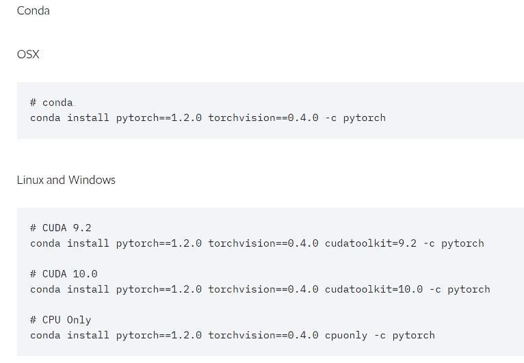
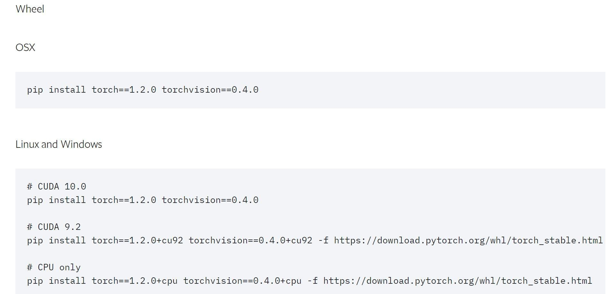
torchvision 是 PyTorch 的计算机视觉工具包（含常用数据集和预训练模型）；cudatoolkit=10.0 是 NVIDIA GPU 加速所需的组件，版本号需与显卡驱动匹配；没有 NVIDIA 显卡的电脑可以装 CPU 版本（官网命令中选择 CUDA = None），学习本课程完全够用。另外，conda 频道与 cudatoolkit 版本号会随时间更新，请以 PyTorch 官网当前给出的命令为准。
8.3 验证环境是否安装成功
在 PyCharm 或 Jupyter Notebook 中运行以下代码：
| 输出 | 含义 |
|---|---|
torch.__version__ 正常显示（如 1.x.x） | PyTorch 安装成功 |
a.device 显示 cpu | 正常情况：不指定 device 时张量默认在 CPU 上创建，本代码即如此 |
| 想用 GPU 计算 | 需安装 GPU 版 PyTorch，并显式把张量移到显卡，如 a = torch.randn(10000, 1000, device='cuda')，此时 device 会显示 cuda:0 |
t1 - t0 很小（零点几秒级） | 矩阵运算正常，性能符合预期 |
c.norm(2) 输出一个数值 | 计算结果有效 |
torch.randn(m, n)：生成 m 行 n 列、服从标准正态分布的随机数矩阵（PyTorch 中叫"张量" Tensor）；torch.matmul(a, b)：矩阵乘法，要求 a 的列数 = b 的行数，本例结果维度为 10000×200；c.norm(2)：求矩阵 c 的 L2 范数（所有元素平方和再开方），用来快速验证计算结果是否正常。
九、本讲小结与自测
9.1 知识脉络
- 课程简介：32 学时，考核 10% 出勤 + 40% 实验 + 50% 综合设计；
- 什么是深度学习：房价预测 → 单神经元 → 多神经元 → 输入层 / 隐含层 / 输出层；"深度" = 隐含层层次多；AI ⊃ ML ⊃ 表示学习 ⊃ 深度学习；核心优势是自动学习特征；
- 发展简史：1957 感知机 → 1986/87 反向传播 → 2006 深度信念网络（"深度学习"术语普及）；
- 为什么火热：海量标注数据 + GPU 硬件支持，规模驱动进步；
- 典型应用：视觉（分类 / 检测分割 / 风格迁移 / 人脸合成）、NLP（词向量 / 翻译 / 文本合成 / 问答）、图像描述；
- 主流框架：Caffe / TensorFlow / Keras / PyTorch ★ / MXNet，本课程选用 PyTorch；
- 动手实操：Anaconda + PyCharm → 配国内源 → 安装 PyTorch → 运行验证代码。